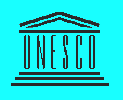

ANNUAL REPORT, 1995
MISSION
UNESCO Chair's Mission is to provide wider opportunities for the transfer of
the knowledge and know-how in the field of engineering sciences. Therefore,
the Chair is acting like a "student" organisation, that strives for
excellence, by serving the needs of individuals and institutions.
Opportunities, competence and commitment are the three dimensions of our
mission statement.
The Chair's major goal is to become acknowledged leader for the value it
offers to its "students", and the rewards it offers to its professors.
To accomplish this mission the UNESCO Chair is guided by its vision of the
future, a focus on its "students", the need for the higher skilled and
motivated organisational team. The Chair envisions a new educational service
unit - one of great challenge and equally great opportunity, instantaneous
communication and intense competition.
The prospect for growth in the University "Politehnica" of Bucharest is
excellent, driven by the ever more sophisticated and complex needs of the
"students". This trend enables the UNESCO Chair to act also as an
appropriate link between other specialised chairs.
The UNESCO Chair's strategies begin and end within its "students". Progress
will be measured by how well the Chair earns the necessary loyalty for long
term relationships that provide the foundation for the Chair's success. The
Chair will win "student" loyalty by providing value-added courses,
differentiated by unique expertise and responsiveness.
Success will require new skills and ability to permanently respond
competitively to the rapidly changing needs of the "students". Therefore,
the UNESCO Chair must seek out the most talented people and the newest, most
resourceful ideas. It will combine entrepreneurial perspective, technology
and discipline in order to focus its resources creatively and efficiently.
The UNESCO Chair's final goal is to become an important link in the network
of University Chairs coming under UNESCO, to align itself at the
international standards of education and training in the world.
FIELD
The UNESCO Chair of Engineering Sciences within University "Politehnica" of
Bucharest is operating as a unique Centre of Excellence that focuses on
interdisciplinary projects in the fields of Energy-Environment and
Software Reliability.
- Master courses
- TEMPUS Programs
- PhD Programs
- Continuing Education
- Research
LEVEL
The Chair provides postgraduate education, research and training and
continuing education.
Postgraduate education
- Master courses on:
- Energy Efficiency-Energy Conservation (operating)
- Management of Natural Resources-Environmental Economics (operating).
During 11-16 December, 1995 the training activities experienced mainly
a practical approach (problem solving oriented). The European Property
Game was delivered by British professors.
- Energy Management (project). The draft is worked out by a working
group for curriculum development for postgraduate course on Energy
Management.
- Gestion et protection de la resource en eau (Water Resource Management)
in co-operation with Technical University of Bucharest (operating
through TEMPUS Program)
- Securite nucleaire et protection radioactif (Nuclear Safety and
Radioactive Protection) in co-operation with University
"Politehnica" of Bucharest, Faculty of Power Engineering (operating
through TEMPUS Program)
- PhD programs involving:
- one Romanian (Dragos Paraschiv)
- one British (Douglas Wilson) - for a 6 months training stage in Romania
- two Moldavians (Sergiu Codreanu, Victor Mihailescu)
- one Swedish (Ali Mohammed Hamid Alsalhi)
Continuing Education
- Training course on Management of Natural Resources.
Environmental Economics. Place: UNESCO Chair's Headquarters.
Date: (13-17 March, 1995)
- International Workshop on Education and Information of the
Human Population and Training Qualified Human Resources for Sustainable
Socio-Economic Transition in the Black Sea Region, organised in co-operation
with UNESCO CEPES and the UNESCO - Cousteau Chair. Place: UNESCO CEPES
headquarters in Bucharest. Date: June 30- July 1, 1995
- Workshop on: Mise en place de formations superieurs en gestion technico
economique de l'energy et de l'environnement dans les PECO et NEI
(Development of high skilled staff in the field of technical economic
management within CEE), organised in co-operation with Division Sciences
de l'Ingenieur et Technologie de l'UNESCO (Science Department of
Engineering and Technology within UNESCO). Place: Ministere de l'Enseignement
Superieur de la Recherche (Ministry of Higher Education and Research),
Paris. Date 21-24 May, 1995.
- Workshop on International Tourism and Environmental Protection, organised in
co-operation with the Black Sea University. Place: Mangalia. Date: 3-16
September, 1995.
- Training of trainers on Political economy of the environment organised
in co-operation with the World Bank. Place: UNESCO Chair's Headquarters.
Date: 24 June - 6 July, 1996 (signed agreement).
- Workshop on Establishing an European anti Poverty Network. Place: UNESCO
Chair's Headquarters. Date: 7-10 March, 1996 (signed agreement)
- Workshop on Curricula Development for Postgraduate Education on Environment
Protection organized by Environmental Training Project for Central and
Eastern Europe. Place: Sinaia. Date: 20-23 March 1995.
Research contracts
- Promoting of new supplier-consumer relations: Demand Side Management,
Pricing Policies.: Carried out for: the Ministry of Research and Technology.
Value: 30 million lei. Worked out by: a team of power specialists and
academic staff from UNESCO Chair. Accomplished: November, 1995.
- Proposals For Restructuring of The Romanian Power Sector. Carried out
for: State Ownership Fund. Value: 8.5 million lei. Worked out by: the
Chair's staff. Accomplished: January 1995.
- Promoting new relationship between power suppliers and consumers:
the management of methane gas consumption in Romania. Carried out for:
the Ministry of Education. Value: 5.6 million lei. Worked out by: Chair's
staff Accomplished: November, 1995.
- Handbook for Engineers on Energy Efficiency (six volumes). Carried out
for: the Ministry of Education for 2 years period (1995-1996). The
volumes are aimed at improving the quality of the training activities
of the Master courses developed within the UNESCO Chair, and they address
the needs of power producers and suppliers, as well as those of consumers.
Worked out by: Chair's staff Accomplished: November, 1995 (3 volumes).
- The proposal of an Energy-Environment Strategy for Romania, accomplished
in September 1994. This work has been presented within the Consultative
Board of the President of Romania in March, 1995.
- Basic Guidelines And Alternatives For Elaborating A Sustainable
Development Strategy For Romania. A Proposal Of Some Strategic Planning
Methods And Implementation Techniques. (Project)
STAFFING
Internal staff
- From University "Politehnica" of Bucharest". Positions:
- Professor 4
- two permanent: Aureliu Leca, Florin Popentiu
- one associate: Mihai Manoliuone
- part time: Nicolae Golovanov, Radu Popa
- Assistant Professor 2
- one part time: Florin Popentiu, Mircea Eremia
- one part time: Nicolae Vasiliu, Carmen Golovanov
- Lecturer 2
- two permanent: Daniela Sripcariu, Mircea Scripcariu
- Assistant to Professor 3
- one permanent: Cristina Ionescu
- two part time: Dana Nistoran, Emil Statie, Gabriel Negranu, Mihai Voronca
- Collaborators from outside the University "Politehnica" of Bucharest".
- Corneliu Rotaru, Director ARCE (Romanian Agency for Energy Conservation)
- Ioan Jelev, Deputy Minister MAPPM (Minister of Waters, Forestry and Environmental Protection
- Serena Adler, Expert on environmental auditing within MAPPM
(Minister of Waters, Forestry and Environmental Protection)
- Nicolae Leonachescu, Professor, Technical University of Bucharest
External staff. Visiting professors
- Maurice Strong, Chairman of Ontario Hydro, Canada, Itinerant Ambassador of UN
- Patrice Harou, Senior Natural Resources, Environmental Economist at World Bank
Economic Development Institute
- Anyl Markandya, Senior Environmental Policy Advisor, Harvard Institute for
International Development, US
- Clifford Zinnes, Institute Associate, Harvard Institute for International
Development, US
- Zbigniew Bochniarz, Director Center for Nations in Transition, Hubert H.
Humprey Institute of Public Affairs, US
- Göran Hedbys, Marketing Manager District Energy, Alf Laval Thermal AB
- Per A. Persons, Vice President, Business Development, Alf Laval Thermal AB, Sweeden
- Nicolae Leonachescu, Professor, President of the Romanian Society of Thermodynamics
- Gholam Jamnejad, Senior Lecturer, University of Sunderland, School of the
Environment, UK
- Dr. Steven Fawkes, Touchtone Energy
- Ethem Gönenç, Civil Engineering Faculty, Environmental Engineering
Department, Istanbul, Turkey
- Yuri Komanov, Vice rector, Academician of Ukrainian Ecological Academy of
Science, Odessa, Ukrain
- Andrew R. Cornwell, Laboratory Manager, School of Computer Sciences and
Electronic Systems, UK
- Alan Cudworth, Professor, Nottingham Trent University, UK
- Ben Elder, Professor, Nottingham Trent University, UK
- Paul F. Arthur, Assistant rector, University of Huddersfield
- Ian Rowe, Hylite Education and Training Trust, University of Huddersfield
- Ramon De Marcos Sanz, Director, Asociation de Promotion de Services
Sociales, Madrid, (Association For Promoting Social Services), Spain
- Pauline Geoghegean, Development Officer, European Anti poverty network,
Bruxelles, Belgium
- Thomas Campbell, Head Department, Department of Energy and
Environmental technology, Caledonian University, Glasgow, Scotland
Mobility for the UNESCO Chair's staff
- Aureliu Leca, Professor, Chairholder
- European workshop on Implementing Sustainable Development At University
Level, 4-6 October, 1995, University of Bradford, Bradford, UK.
As one of the speakers, Professor Leca has presented the Paper Training
information and dissemination centre on energy management (TIDCEM) - an
investment in the education of decision makers. The TIDCEM is an UNESCO -
UNDP training centre, set up at University "Politehnica" of Bucharest
with an international co-financing of about $US 300000 and designed for
3 years.
- International symposium on: electricity, health and the environment:
comparative assessment in support of decision making, organised jointly
by EC, ESCAP, IAEA, IBRD, IIASA, OECD/NEA, OPEC, UNEP, UNIDO and WHO,
held in Vienna at IAEA, Austria, 16-19 October, 1995.
- Manoliu Mihai, Professor
- Nottingham Trent University, UK for a period of 6 weeks, October, 1995
- Universite Paris 7, France for a period of 6 weeks, March, 1995
- Training of trainers on: PoliticalEconomy of the Environment, World Bank,
Economic Development Institute, Washington D.C., for a period of 2 weeks,
October, 1995.
- Florin Popentiu, Professor
- Telecom Paris, May 2-June 25, 1995:
Research work on the scientific research contract Total Quality For
Software Engineering Management, financed by NATO. The contract finances
the exchange of research teams between University "Politehnica" of
Bucharest - UNESCO Chair, Telecom Paris - Computer Department and City
University of London - Centre of Software Reliability
- United Kindom, June 26- July 3, 1995:
International Conference in the field of Reliability, ESREL '95 - 26-28
June, as a member of the Organisational Committee. Professor Popentiu
presented the Paper: Combining SRGM Prediction.
- Visiting professor in The Netherlands, July 3 - October 7, 1995
- Visiting professor at University of Twente and Vrije University of
Amsterdam. During this period, professor Popentiu has also elaborated
in co-operation, a paper on Software Reliability Forecasting, which has
been accepted for the International Conference ESREL '96, that will take
place in Greece, 1996.
- Daniela Scripcariu, Lecturer
- International Conference: European Commission For An Enrage Efficient
Economy, 6-10 June, 1995, Mandelieu, France
- Cristina Ionescu, Assistant to Professor
- Training stage on: Management of Natural Resources, for a period of 10
month, September 1, 1994 - June 30, 1995, at University of Minnesota,
Hubert H. Humphrey Institute of Public Affairs, US
- Dorin Cristescu, Professor, Vice Rector of the University "Politehnica"of Bucharest.
-
INFRASTRUCTURE
The UNESCO Chair's infrastructure include:
- An IBM RISC/600 system, UNIX based, connected to INTERNET through the
computer network operating within University "Politehnica" of Bucharest.
The system offers real communication facilities through:
- e-mail
- www (world wide web)
- 3 PC 486 systems, (from which one was upgraded and two are new acquisitions)
connected to the computer network. The system currently offers a real operating
computational facilities and has the necessary capacity to offer future access
to INTERNET. The devices attached to this computer system consists of:
- 3 printers (1 laser HP4P, 1 inkjet-Olivetti, 1 Panasonic)
- 1 scanner (ScanJet HP IIp)
- 1 binding machine
- documentation services, consisting of a specialised library, containing books
and magazines specialised on energy issues (financed fron the Chari's budget)
and on environmental issues (provided by teh World Bank)
- access to the University's editing facilities. During the academic year
1994-1995, the Chair published the following handbooks:
- Marketing
- Elements of environmental legislation
- Inside organisation. Reengineering
- Integration numerique des equations aux diferentielles (Numerical integration
of differential equation)
SUSTAINABILITY
- Research contracts
- Continuing Education
- 1.7 million lei -- payment for the five days intensive training course on
Management of Natural Resources and Environmental Economics (received from
the Water Authority)
- $US 30,000 -- grant received from the World Bank EDI.
- TEMPUS Project
- $US 6,500 received for the Master Program through Technical University of
Bucharest
Posted on ...
Copyright © UNESCO Chair, "Politehnica" University of Bucharest
HTML by Andrei D. Caraman